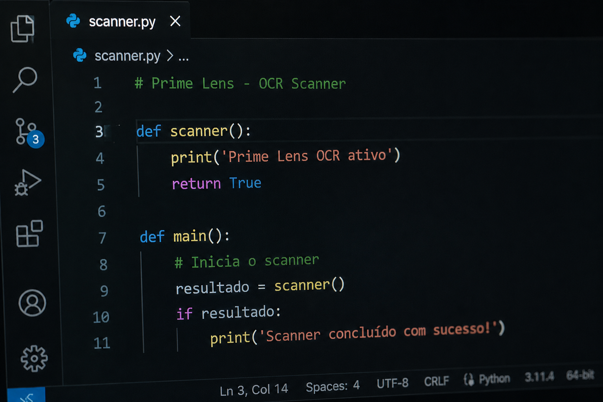

Acesse o Modo Improve Scanner
Inteligência artificial aplicada à produtividade de estudantes, desenvolvedores e profissionais da tecnologia.
Transforme a câmera do seu smartphone em uma ferramenta inteligente capaz de detectar códigos, melhorar legibilidade e identificar conteúdos técnicos em tempo real.
Ver protótipo ↓Muitos estudantes enfrentam dificuldades ao fotografar códigos, quadros e anotações técnicas.
Reflexo, baixa iluminação, desfoque e nitidez reduzida dificultam o aprendizado e a produtividade.
IA integrada à câmera que analisa a cena e transforma imagens em conteúdo digital via OCR inteligente.
Exemplos reais de otimização pelo Prime Lens
Código Python detectado e extraído com 97% de precisão
Classe Java identificada mesmo com reflexo no quadro
Markup e estilos capturados de monitor em ambiente com baixa luz
Funções JavaScript extraídas de anotações escritas à mão

Análise de vídeos em tempo real
Reconhecimento automático de bugs no código
Sugestões inteligentes de refatoração
Suporte a múltiplas linguagens de programação